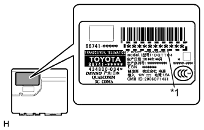
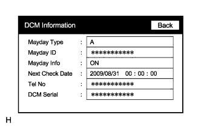

G-BOOK SYSTEM > SYSTEM DESCRIPTION |
| G-BOOK SYSTEM OUTLINE |
The G-BOOK system is a telematics service that links the vehicle and G-BOOK network (provides information from the G-BOOK center or content providers).
To use the G-BOOK system, it is necessary to connect the telematics transceiver (data communication module) to the display and navigation module display.
The user needs to follow the instructions on the display and navigation module display to start using the G-BOOK system service after applying for the service at a dealership.
| FUNCTION OF MAIN COMPONENTS |
| Component | Function | ||
| Emergency call switch | When the emergency call switch is pressed, a switch signal is sent to the telematics transceiver (when a manual maintenance check or manual emergency call is performed). | ||
| LED Indicator Light | Green |
| |
| Red |
| ||
| Telephone microphone assembly |
| ||
| Telephone antenna assembly | Sends and receives the data and voice signals used for the G-BOOK service through a communication network. | ||
| Telematics transceiver |
| ||
| Mayday battery (Back-up battery) |
| ||
| GPS antenna | Receives GPS radio waves and sends them to the display and navigation module display. | ||
| Main body ECU (Multiplex network body ECU) | Sends a security horn sounding signal to the display and navigation module display when the theft deterrent system is activated. | ||
| Display and navigation module display |
| ||
| Stereo component amplifier assembly | Receives the received voice signal sent from the display and navigation module display as a MOST signal and outputs it as sound from the vehicle speakers (when the operator service is used). | ||
| Center airbag sensor assembly | Sends an activation signal to the telematics transceiver when airbags deploy (an automatic emergency call is made). | ||
| DEVICE USED FOR G-BOOK SYSTEM COMMUNICATION |
The telematics transceiver is used for data communication or emergency call service telephone calls and operator service telephone calls.
The handsfree function cannot use the telematics transceiver. A user's "Bluetooth" compatible cellular phone needs to be used.
Perform the following if the device used for G-BOOK system communication is replaced.
| G-BOOK ID OUTLINE |
The display and navigation module display functions as the G-BOOK device.
The display and navigation module display has a serial number (G-BOOK ID) which can be used to determine the individual device when servicing.
| MAYDAY ID OUTLINE |
The telematics transceiver functions as the emergency call service device to perform emergency calls.
The telematics transceiver has a serial number (mayday ID) which can be used to identify the individual device when servicing.
| DATA COMMUNICATION MODULE (DCM) OUTLINE |
|  |
The G-BOOK device uses the DCM (telematics transceiver) to provide access to the network service.
The DCM has a DCM ID (printed on the label attached to the DCM).
As is the case with cellular phones, the DCM has a phone number.
| *1 | DCM ID |
| G-BOOK SUPPORT CENTER OUTLINE |
The G-BOOK support center provides members with opportunities to ask questions and request information necessary for troubleshooting.
| Main Service | Outline |
| Answering questions about the G-BOOK system | Answering questions from customers about the G-BOOK system |
| Contracting or canceling the G-BOOK online service | Performing procedure to make or cancel a contract for customers |
| Confirming server or communication conditions | Confirming the G-BOOK center conditions |
| Re-registering a G-BOOK device or telematics transceiver | Performing procedure for re-registration when the G-BOOK device or telematics transceiver is replaced |
| Answering questions about a manual maintenance check for the emergency call service | Answering questions when a manual maintenance check for the emergency call service has not completed normally |
| COMMUNICATION SYSTEM |
USB Outline
G-BOOK system components communicate with each other via USB.
| DIAGNOSTIC FUNCTION OUTLINE |
The G-BOOK system has a diagnostic function (the result will be displayed on the master unit or intelligent tester).
| DIAGNOSIS DISPLAY DETAILED DESCRIPTION |
Enter diagnostic mode (Click here).
 |
Select "Service Information" on the Service Menu screen.
 |
Service Information Screen
| Display | Content |
| G-BOOK Information for Contract | The G-BOOK ID, flag information, etc. are displayed. |
| DCM Information | The ID, contract information, maintenance check date, etc. which are related to the emergency call service are displayed. |
| Emergency Call History | The history (date and condition) of emergency calls is displayed (Click here). |
| Security History | The history (date and result) of alarm notifications is displayed (Click here). |
 |
G-BOOK Information for Contract Screen
| Display | Content |
| G-BOOK ID | The G-BOOK ID of the display and navigation module display is displayed. |
| DCM ID | The 11-digit serial number of the telematics transceiver is displayed. |
| FLAG | The G-BOOK contract flag or service flag of the display and navigation module display is displayed. |
|  |
DCM Information Screen
| Display | Content |
| Mayday Type | The type of installed emergency call service device is displayed (on this model, "A" (airbag-linked type) is displayed). |
| Mayday ID | The ID of the installed emergency call service device is displayed. |
| Mayday Info | The emergency call service contract condition is displayed as follows:
|
| Next Check Date | The date on which the automatic maintenance check will be performed next is displayed. |
| Tel No |
|
| DCM Serial |
|
| WARNING NOTIFICATION FUNCTION |
Warning notification restraint mode
Enter warning notification restraint mode (using the intelligent tester).
Enter warning notification restraint mode (using the display and navigation module display).